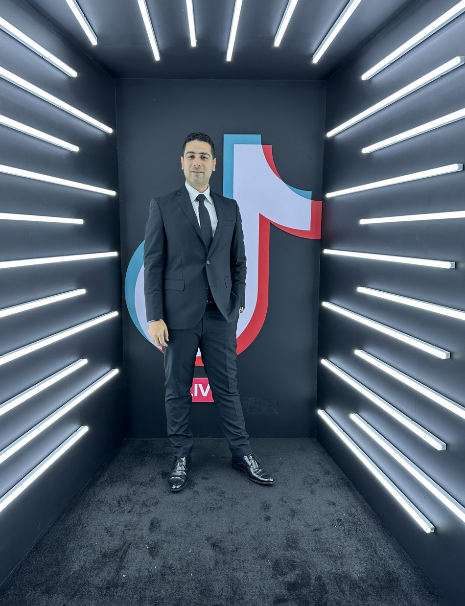

Hi! I'm Abdulrahman Shaheen.
I help brands turn social media into a real growth engine: building strategy, leading content and creative teams, and scaling campaigns across global markets.

I'm most interested in solving the problem behind the content.
What does the brand need to achieve, who does it need to influence, and what role should social and content play in getting there?
Strategy & direction
I assess where a brand stands, identify gaps and opportunities, and build the roadmap to move its social presence forward, from elevating existing channels to building new functions from scratch.
Content & creative leadership
I turn strategy into content systems that teams and agencies can actually execute: pillars, editorial planning, campaign concepts, creative briefs, scripts, production direction and on-ground activations.
Global scale & ecosystem leadership
I coordinate agencies, production partners, creators, freelancers and cross-functional stakeholders across regional and global markets.
Global framework. Local relevance.
Analysis, insights & performance
I look beyond likes and views. I track watch duration, retention, completion, drop-off points, shares, saves and traffic sources to understand audience behavior and improve strategy.
Business first, audience always, system before content.
Start with the business
Before asking what to post, I want to understand what the business needs social media to achieve.
Understand the audience
Content is only effective if it means something to the people consuming it. Audience behavior, culture, interests and platform habits shape the strategy.
Build the system
Good content should not depend on random inspiration. It needs clear strategy, frameworks, workflows, governance and ownership.
Create
Strategy needs to become something people can actually see, understand and engage with.
Measure
I look beyond surface-level engagement. I want to understand how audiences behave throughout the content.
Optimize
Performance is not the end of the process. It is the input for the next decision.
A repeatable framework, applied across every market.
Understand
Business + audience + market
Strategize
Positioning + roadmap + content
Create
Creative + production + distribution
Measure
Performance + behavior + sentiment
Learn
Insights + opportunities
Optimize
Strategy + content + execution
Scale
Frameworks + markets + ecosystem
Numbers behind the frameworks.
Seven things I consistently bring to the table.
Strategic thinking
I can assess a brand, identify the opportunity and build the roadmap.
Content leadership
I know how strategy becomes content and how content can become a growth engine.
Creative understanding
I understand the creative and production process well enough to lead it effectively.
Global experience
I understand the balance between global consistency and local relevance.
Agency leadership
I know how to brief, direct, challenge and manage external creative partners.
Performance thinking
I use data and audience behavior to improve decisions rather than simply report results.
Business context
I connect social activity to wider marketing, brand and business objectives.